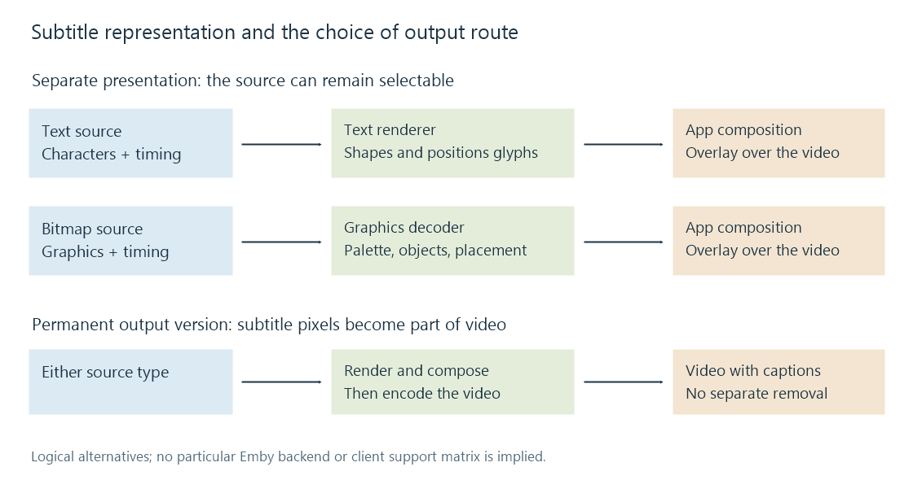

Understanding subtitles and captions
Subtitles and captions present timed language and sound information as selectable tracks or as part of the video picture.
A movie's spoken dialogue, a translation of that dialogue, and a caption such as [door slams] communicate different things. Subtitles and captions put that information on the programme's timeline so a viewer can read it when it matters.
In common usage, subtitles often means dialogue or translation. Captions often includes the speech and meaningful sound information needed by a viewer who cannot hear the soundtrack: speaker identity, music, and sound effects. Terminology varies between countries and delivery systems, so the contents of a track are more informative than its label alone.
Three independent questions about the words on screen
| Question | Examples |
|---|---|
| What information is included? | Translated dialogue; original-language dialogue; speech plus meaningful sound cues |
| How is it represented? | Characters and styling instructions; pre-rendered images |
| How does it reach the picture? | A separate selectable track; permanently incorporated into the video |
A text subtitle is not automatically a translation, and an image subtitle is not automatically permanent. A disc's bitmap subtitle track can be switched on or off because its images remain separate from the movie pictures.
“Closed” normally describes captions available as a separate presentation the viewer can enable. “Open” captions are presented as part of the picture and cannot be removed with a subtitle switch. The caption's wording and the mechanism for presenting it are different properties.

A track supplies content; a cue supplies an interval
A subtitle track is a separately described sequence. It can have a language, title and selection flags. A cue is one timed item within that sequence: for example, a sentence intended to appear from 12.5 to 15 seconds.
The player combines the chosen track with the chosen audio and video. An English movie can have an English caption track and a Spanish translation track without duplicating its picture. Choosing another track changes which sequence is presented.
The stored cue also needs presentation. For text, a renderer selects glyphs, lays out the line and draws it. For images, it decodes and positions the supplied graphics. Either result can be composed over video by the app, or incorporated into encoded video upstream when that route requires it.
What a viewer can infer from the selection
Suppose a film lists these three entries:
| Track description | Intended content |
|---|---|
| English | Dialogue in English |
| English SDH | Dialogue plus useful speaker and sound descriptions |
| Spanish, forced | Selected passages needed for the intended viewing context |
Those descriptions help select content. They do not identify the subtitle format or guarantee the exact selection policy of every player. A track labeled “forced” might contain only particular passages; another representation can flag selected events within a fuller track. A permanent on-screen translation is a separate situation.
For Emby, subtitle preferences describe the user's selection policy, while subtitle naming explains identification of external files. This Learn section explains the data and processing behind that selection. A correctly identified language can still refer to a different edit of the movie, and a correctly timed track can require a renderer capable of its format.